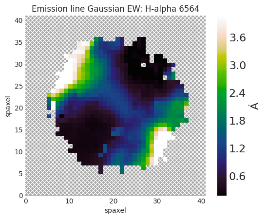

Using SDSS-marvin#
The most essential aspect of our project relies on analyzing the emission spectra from observable galaxies. We will be using the MaNGA database, which has mapped spectral measurements across the faces of around ~10,000 nearby galaxies. In order to access this data, we must first get acquainted with sdss-marvin. sdss-marvin is an open-source API that allows us to access MaNGA spectral data through python and is also specifically designed to visualize and analyze these datasets. For our purposes, we will be exclusively demonstrating features with the Maps interface, although you certainly can get acquainted the rest of marvin through their official documentation.
Maps are wonderful tools in the marvin interface that allows us to retrieve information about a galaxy. First, let’s explore how to retrieve a Map object for any specific galaxy.
import marvin
from marvin.tools import Maps
maps = Maps(plateifu='8485-1901')
maps
All galaxies in the MaNGA dataset have an identifier based on the plate-ifus used to observe them. We use this identification number to retrieve information about a specific galaxy we are interested in through the Maps call. Alternatively, we can also create a map through this call as well:
galaxy_map = marvin.tools.Maps('8485-1901', bintype='HYB10')
galaxy_map
Since maps are essentially objects that contain a bunch of information about the galaxy we have specified, we can retrieve any specific spectra by using the code below. Since we are interested in the H-Alpha equivalent width measurement, and the H-Delta absorption line, we retrieve the following:
h_alpha_gew = galaxy_map.emline_gew_ha_6564
lick_h_delta = galaxy_map.specindex_hdeltaagalaxy
h_alpha_gew
lick_h_delta
The variables h_alpha_gew and lick_h_delta now contain the spectral information we want for this galaxy. The data is stored in a 2D array, where each x, y is a region of the galaxy, and the spectral information at that datapoint is the spectral emission lines for that region. These datapoints are called spaxels (space pixels), and they essentially make up the galaxy by representing small sections at a time, analogous to pixels on an image.
To make sense of this data, we can also plot these spaxels with marvin!
h_alpha_gew.plot()

Now that we understand how to retrieve the spectrum data for a galaxy, and its representation, let’s now use these to identify Post-Starburst regions in our galaxy!